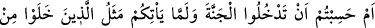
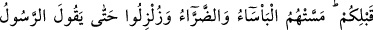
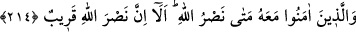

Burada “indirilme” ifâdesi yerine “kendilerine kitap verilenler” ifâdesinden
anlıyoruz ki onlar kitapta belirtilen hakikatlerin ne olduğuna vâkıf idiler. Buna rağmen
istenilen ve beklenenin aksini yaptılar; ihtilâfı kaldırmak için indirilen kitabı, ihtilâfın
daha da kökleşme vasıtası kıldılar. Bunu da başka bir sebebten değil sırf aralarındaki
kıskançlıktan ötürü yaptılar. Aşırı dünyâ hırsı, hased ve zulüm onları böyle bir harekete
sevketti. Nitekim Kâbil’e kardeşi Hâbil’i öldürten de bu haseddi. Her asırda böyle
olmuştur. Genelde bunu yapanlar, halkın elebaşlarıdır. Halk da onlara tâbi olur. Bu
yolda çığır açanlara arkalarından gelenlerin suçları da eklenir.
Yine bu âyetten anlıyoruz ki hak olanda ihtilâf etmek, İslâm’dan önceki durumdur.
Artık, bunun üzerine Allah mü’minleri onların üzerinde ihtilâf ettikleri gerçeğe iletti.
Bunu da izni, lütfu, şefkati, irâdesi ve tevfîk-i sübhânîsi ile kolaylaştırarak yaptı. Bu
sâyede inananlar da gerçeğin ne olduğunu apaçık görüp bildiler. Zaten şu bir hakîkattir
ki: “Allah dilediğini dosdoğru yola iletir.” O öyle bir yoldur ki ona giren şaşırıp
sapıtmaz.
Yüce Allah, geçmiş ümmetlerin, apaçık âyetler geldikten sonra peygamberlerinin
getirdiklerine muhâlefetlerini beyânın ardından, Nebiyy-i Ekrem (s.a.) Efendimiz’e ve
mü’minlere -şecâatlarını artırmak ve kâfirler karşısındaki dirençlerine sebât katmak
maksadıyla- buyuruyor ki:
214. (Ey mü’minler!) Yoksa siz, sizden önce gelip geçenlerin başına gelenler size
de gelmeden cennete gireceğinizi mi sandınız? Yoksulluk ve sıkıntı onlara öylesine
dokunmuş ve öyle sarsılmışlardı ki, nihâyet peygamber ve beraberindeki
mü’minler: Allah’ın yardımı ne zaman! dediler. Bilesiniz ki Allah’ın yardımı
yakındır.
Yoksa siz, sizden öncekilerin durumu başınıza gelmeden cennete gireceğinizi mi
sandınız. Yok öyle zannetmeyin, iş o kadar kolay değil. Geçmiş peygamberlerin ve
onlara inanan mü’minlerin başlarına gelen şiddetli ve çetin ibtilâlara maruz kalmadan
cennete gireceğinizi mi zannedersiniz?
Onlar öyle imtihan olundular ki başlarına gelen hâdiseler âdetâ bir darb-ı mesel
olmuştur. Öyle şiddetli korku ve fakirlik, hastalıklar ve acı verici sıkıntılar dokunmuş,
başlarına gelen şiddetli hâdiselerden öyle sarsılmışlardı ki, nihâyet peygamber ve
onunla birlikte olanlar: “Allah’ın yardımı ne zaman?” diyecek olmuşlardı.
Sıkıntı ve şiddetin uzaması sebebiyle: “Allah’ın bize olan zafer vâdi ne zaman